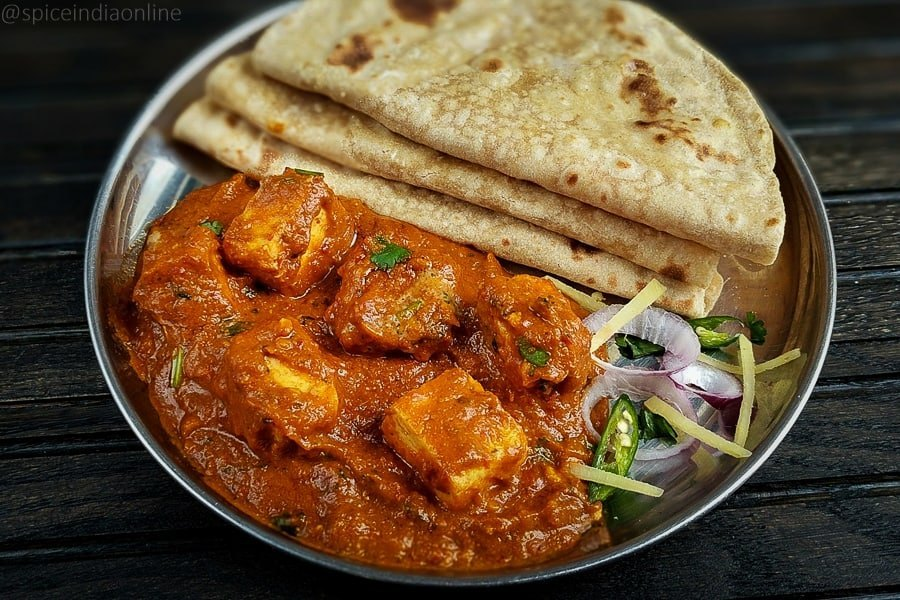

Paneer Butter Masala

Description
When you go to a restaurant for a celebratory dinner, there is one dish which always finds a place in your order. It is the rich, creamy, Paneer Butter Masala. There aren't many dishes that are popular with vegetarians and non-vegetarians alike.
Everything about this desi delicacy is celebratory. The mild sweetness and tanginess from tomatoes and onions; richness of butter, cashew nuts and cream; combined with the subtle aromas from dry spices; married together by the aromatic kasuri methi and soft, yet crumbly texture of paneer - it's pure, divine Indian food at its best!.
Ingredients
- 200 grams paneer (cottage cheese)
- 3 onions
- 3 tomatoes
- 10 Cashew nuts
- 1 inch ginger,4 - 5 pods garlic
- 1/2 tablespoon coriander powder, 1 tablespoon kashmiri chili powder, 1/4 teaspoon garam masala
- 1 bay leaf, 3 cloves, 3 cardamom, 1 inch cinnamon
- 1 teaspoon kasuri methi leaves (dry fenugreek), 2 - 3 sprigs coriander leaves
- To taste salt, 2 tablespoons butter, 1 1/2 tablespoons fresh cream
Working Steps
- Finely chop the onions and tomatoes. Soak the cashew nuts in water.
- Heat some oil in a pan, and add the chopped onions.
- Cook till they are tender. As soon as the onions turn translucent, add the chopped tomatoes.
- Add salt, and mix well.
- Close the lid, and cook for 3 minutes on a low flame.
- Open the lid, and add coriander powder, chili powder, garam masala, and cashew nuts.
- Stir well, cook till the juices start to disappear, and switch off.
- Let it cool. Transfer the onion and tomato mixture to a blender, add a cup of water, and grind to a fine paste.
- Now this is the "masala" of our paneer butter masala. Add more water if the masala it's too thick.
- Heat a pan, and melt the butter.
- Fry the dry spices, bay leaf, cardamom, cloves and cinnamon, for 1 minute on a low flame.
- Crush the ginger and garlic, and add to the pan.
- Add the masala to the pan, add more chili powder (if required) for the colour, and mix well.
- Cook with the lid closed for 3 minutes.
- Open the lid, and cook for some more time if you want to reduce the gravy. Add the paneer cubes and the Kasuri methi leaves.
- Add some cream and mix well.
- Garnish with coriander leaves and a pinch of methi leaves. Serve hot with roti or naan.
Notes
- Use only Kashmiri chili powder for this recipe - it adds a beautiful red colour to the curry without making the masala too hot
- Crush the ginger and garlic to make a coarse paste before drying in butter. I used a mortar and pestle. Crushing them on the chopping board with the flat surface of your knife will do fine
- Kasuri methi adds a welcome bitter note to the sweet flavours of paneer butter masala. But be careful not to overdo it. Too much methi leaves will make your curry taste bitter!